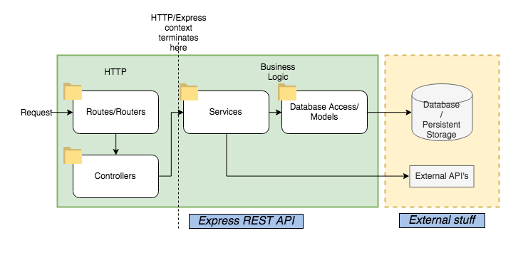
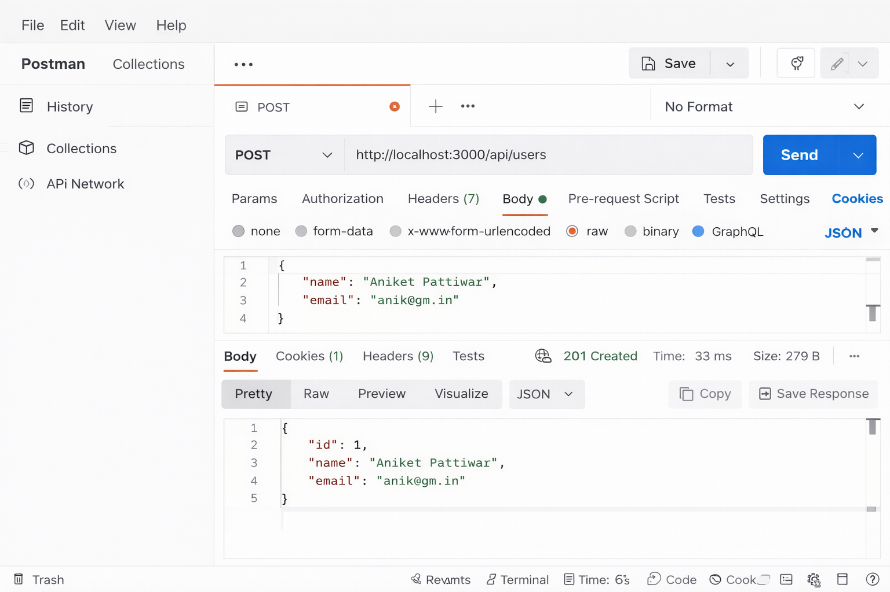
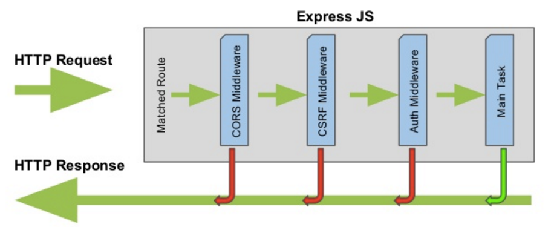
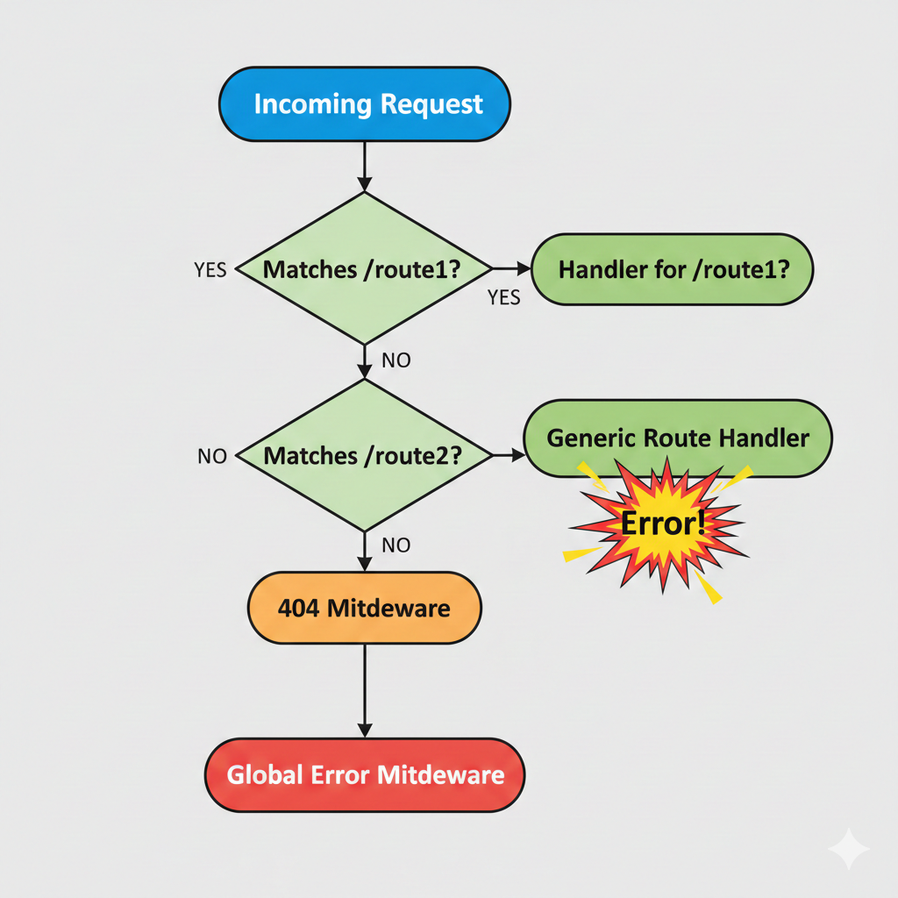

npm init -y
npm install express
Index.js- This code sets up the server, includes a logger middleware, and defines first routes.
const express = require('express');
const app = express();
app.use(express.json());
app.get('/', (req,res)=>{
res.send("Hello Express");
});
app.listen(5000, () => {
console.log('Server running at http://localhost:5000/');
});
e.g., a `POST` request to `http://localhost:5000/add`.

Middleware functions are functions that have access to the request object (req),
the response object (res), and the next function in the
application's request-response cycle. They can execute code, make changes to the request and
response objects, and end the cycle or pass control to the next middleware.

app.use((req, res, next) => {
res.status(404).send("Sorry, that page doesn't exist!");
});This special middleware has four arguments. Use it to catch any server errors.
app.use((err, req, res, next) => {
console.error(err.stack);
res.status(500).send('Something broke!');
});
Install Supertest: npm install --save-dev supertest.
const request = require('supertest');
const app = require('./index');
describe('GET /', () => {
it('Homepage resp', async () => {
const response = await request(app).get('/');
expect(response.statusCode).toBe(200);
expect(response.text).toContain('Welcome');
});
});